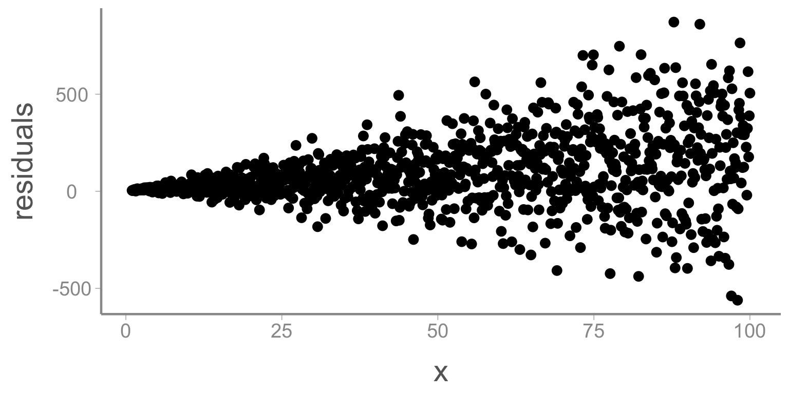
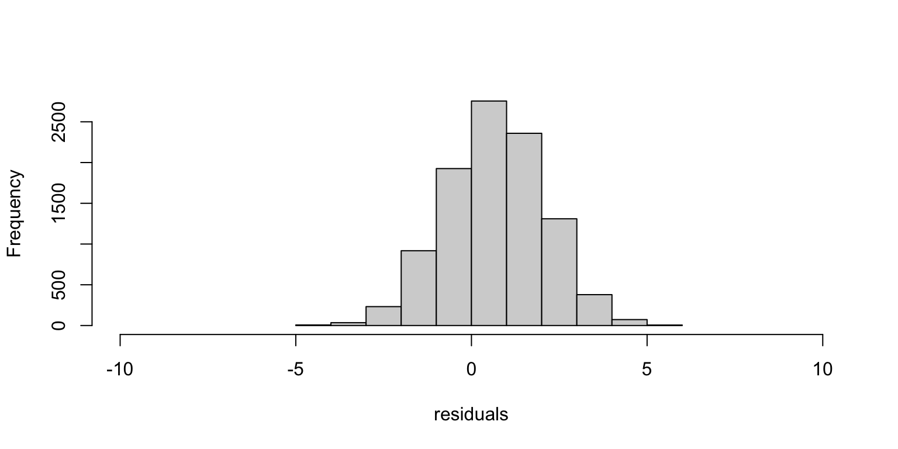
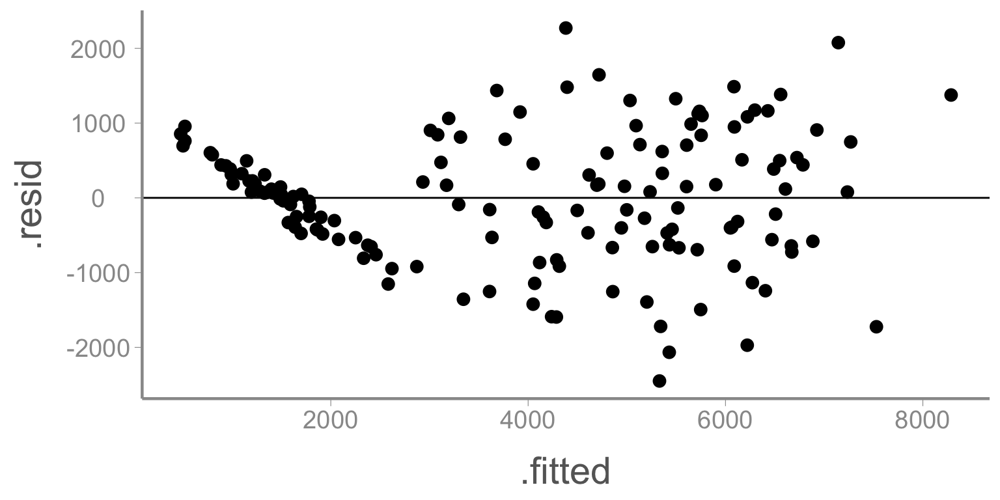
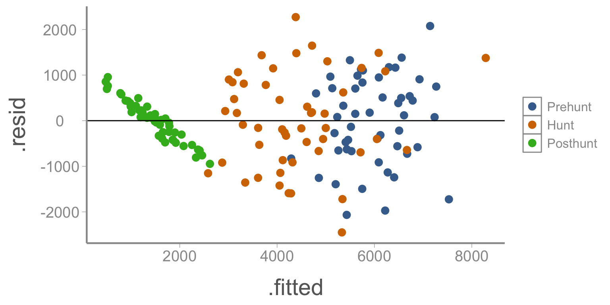
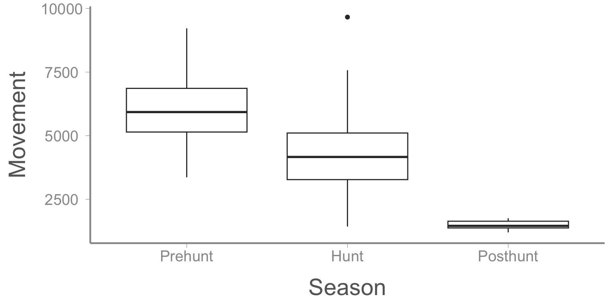
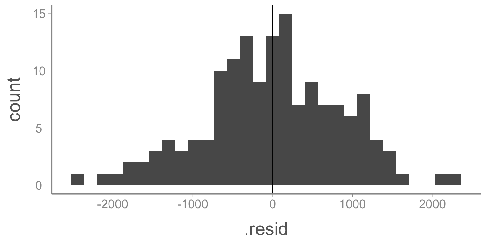
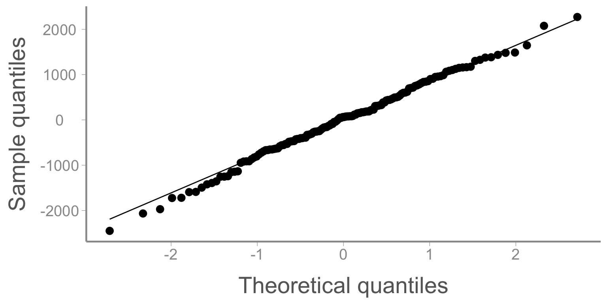
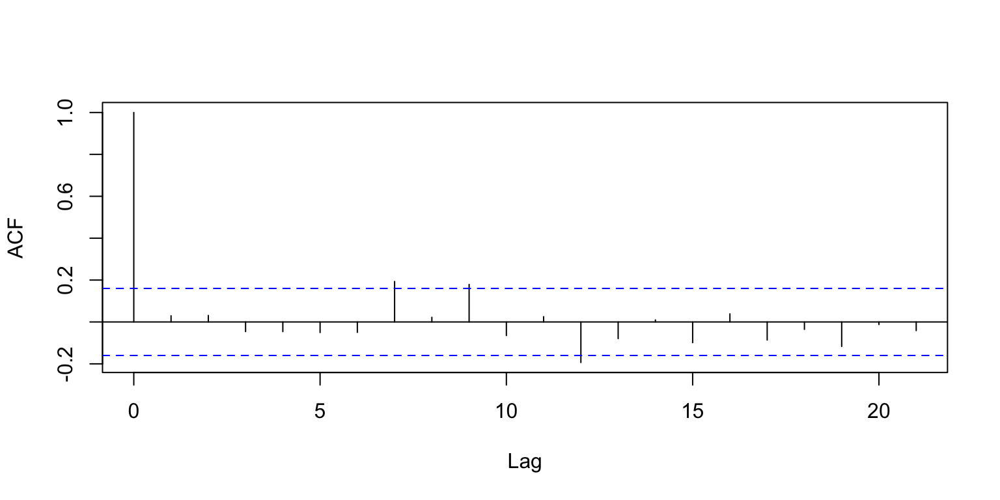
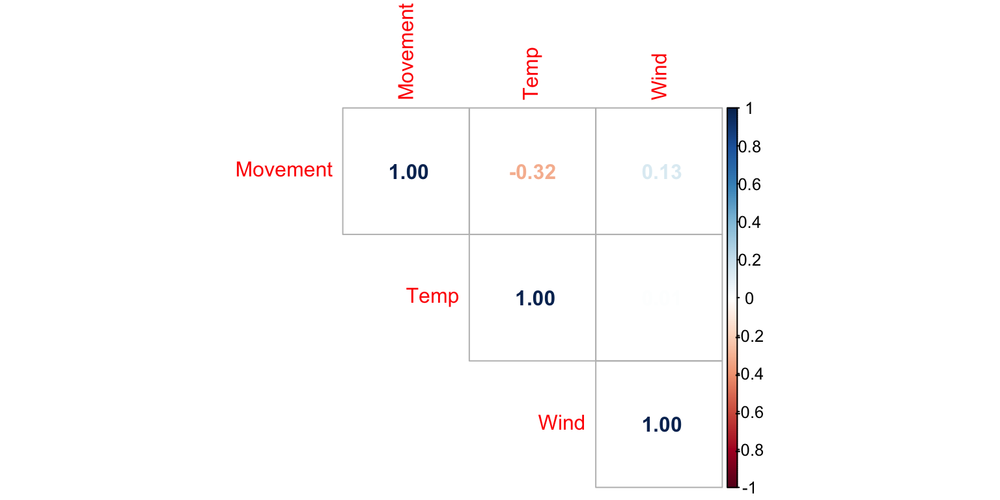
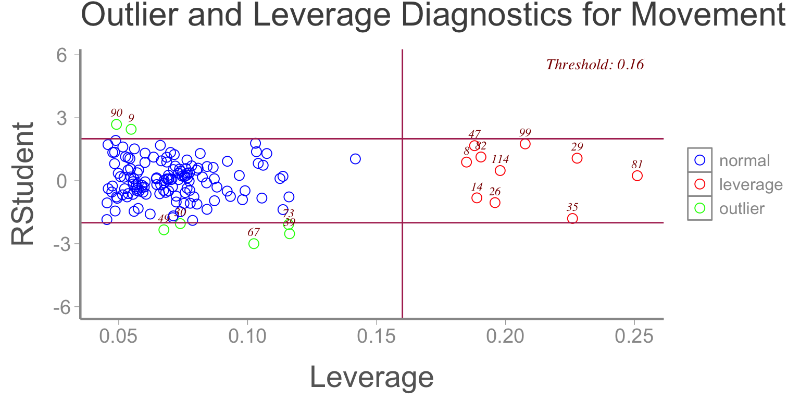

Lab 8: Evaluating assumptions of Linear Models
FANR 6750: Experimental Methods in Forestry and Natural Resources Research
Fall 2026
Lab 7
Interactions in experimental design
Visualizing interactions
Types of interactions
Factorial designs
Using aov()
Using lm()
Follow-ups
Today’s topics
Review of linear model assumptions
- OLS regression and the Gauss Markov Theory
Evaluating assumptions (visual assessments and tests)
Linearity
Normality
Homoscedasticity
Independence
Multicollinearity
Outliers and influential observations
Assumptions of linear models
When we are using R to help with data analysis, keep in mind that, for the most part, R is happy to do anything that you tell it to do. In reality though, every linear model that we will use this semester will come with a set of assumptions. Before using any model for data analysis, you will need to consider the assumptions of that model and decide whether or not it is reasonable to make those assumptions. If it is, that model may be appropriate for that analysis; if it is not, you will need to consider other options. Because we have limited time in this course, for the most part we will not delve into other modeling options including nonparametric tests, GLMS, and data transformation methods. Several other courses on campus, however, directly tackle these approaches.
All linear models have at least 6 explicit assumptions. In this course, we will primarily consider the first 4 of these assumptions, but it is good to know that the others (and usually more) exist.
As we go through these assumptions try to find in our linear model where these assumptions show up (some are more subtle than others).
- Linearity: We assume that the relationship between x and y is linear
Note: This assumption DOES NOT mean that we need to be able to fit a straight line through the data. Often, we will actually used a curved line (in the cases of quadratic relationships). Rather, this assumption means that the parameters themselves enter the model linearly. This means that for one unit change in a predictor, there is ALWAYS the same constant change in the response.
Let’s see some examples:
\[ y_i = \beta_0 + \beta_1x_1 + \epsilon_i \]
\[ y_i = \beta_0 + \beta_1x_1 + \beta_2x_1^2 + \epsilon_i \]
\[ y_i = \beta_0 + \beta_1x_1 + \beta_2x_2x_3 + \epsilon_i \]
\[ y_i = \beta_0 + x_1^{\beta_1} + \beta_2x_1^2 + \epsilon_i \] Which of the above examples are linear and which are not?
- Normality: We assume that the residuals are normally distributed
This assumption will be important as we progress through the semester and perform hypothesis testing to assess the significance of predictor variables. While normality of residuals is not required, it suggests that the model is doing a good job of predicting the response (i.e. most residuals are close to zero and larger errors are much less likely).
- Homoscedasticity: We assume that the residuals have a constant variance across all levels or values of x (if not, we refer to that as heterscedasticity)
When might this assumption be violated?
- In time series
- In cross sectional studies
- Independence: We assume that the residuals are independent of one another and independent of predictors.
This assumption means that we cannot predict the size of a residual from another residual (autocorrelation) or from the value of a predictor variable (endogeneity).
When might this assumption be violated?
- Unbiased estimator: We assume that the residuals are centered on zero.
If the residuals are centered on zero, then our estimate of the parameter is doing a good job of approximating the true value of the parameter. If the residuals are not centered on zero, then the model is either consistenly under or over estimating the parameter values (a biased estimator).

Note: When we are using least squares regression, we assume that our estimators are unbiased. An unbiased estimator is not always desirable though (or even realistic [e.g. estimating \(\lambda^2\) or \(e^{-\lambda}\) for a poisson distribution]). In general, bias and variance are both just forms of error in the model. One is not inherently worse than the other. See here for an in depth discussion of this topic from one of the founders of modern probability theory.
Remember that the total error (MSE) can be calculated as:
\[ MSE = Bias(\hat\beta)^2 + Var(\hat\beta) \]
When might a biased estimator be advantageous?
- Independent predictors: We assume that when using multiple predictor variables, they are relatively independent from one another.
If one explanatory variable is able to be partially predicted using others (the information provided by the variable is somewhat redundant) then we refer to that as multicollinearity. In general, linear models are able to withstand a great deal of multicollinearity. These methods, however, are not able to deal with situations where a predictor variable is completely redundant. In this case, the Gram matrix [\(X'X\)] is not invertible (singular; i.e. the matrix algebra isn’t defined).
What are some other issues we might consider when thinking about whether multicollinearity will affect our model?
Standard error of estimates
Stability of parameters (inference)
Issues with model selection (effect on penalty terms and parsimony)
Cost of data collection
Unreasonable or impossible predictions (due to impossible combinations of predictor values)
What are some examples where multicollinearity might happen?
Predicting nest survival using both Fahrenheit and Celsius
Predicting presence of birds using all % land use categories
Predicting movement of fish using dissolved oxygen, salinity, and conductivity
Ordinary Least Squares Regression and the Gauss Markov Theory
All of the assumptions of linear models above can be traced back to the method we will be using (ordinary least squares regression) and the theory that helps explain it (Gauss Markov Theory). The method of OLS regression works by minimizing the sum of the squared residuals. The Gauss Markov Theory says that when the assumptions listed above are reasonably met, this minimum can be obtained in a straightforward way, will be unique, and will be the Best Linear Unbiased Estimator. Namely:
\[ \hat\beta = (X'X)^{-1}X'y \]
While this formula may look somewhat daunting, remember that we have all the information we need in the form of our data. We have our X matrix (the variables being used as predictors) and we have our vector of y (the response variable). All that remains is to perform some matrix algebra to obtain our vector of \(\hat\beta\)’s.
Evaluating model assumptions in R
Above, we have seen many of the assumptions that are made when using linear modeling as a tool for data analysis. Now we will look at how we might evaluate our data to see if they meet those assumptions or if they deviate enough that we will need to adjust our methods.
Data example
Deer hunters are often interested in knowing what variables affect deer movement rates. Presumably deer should move more during certain conditions and less during others. Knowing what affects this change can help hunters to know when their hunt is most likely to be profitable.
Below is a dataset containing information about 150 radio collared bucks. The total movement (m) in one day was recorded for each deer across several tracts of land in Arkansas. Other information which was also collected includes the day on which the tracking was conducted (either the last day before hunting season starts, the day hunting season starts, or the first day after hunting season ends), the average temperature (F) on that day, the average wind speed (mi/hr) on that day, and the patch size (categorical) where the deer resides.
Let’s start by loading the deerdata dataset and examining the data.
library(FANR6750)
data('deerdata')We should also examine the structure and summary of the dataset:
str(deerdata)
#> 'data.frame': 150 obs. of 6 variables:
#> $ Deer : int 1 2 3 4 5 6 7 8 9 10 ...
#> $ Movement: int 6676 6290 5038 6849 7313 6725 7471 5845 9220 5138 ...
#> $ Season : chr "Prehunt" "Prehunt" "Prehunt" "Prehunt" ...
#> $ Temp : int 47 56 68 54 51 47 58 64 50 52 ...
#> $ Wind : int 12 14 12 14 20 20 13 16 17 21 ...
#> $ Patch : chr "Medium" "Large" "Large" "Medium" ...
summary(deerdata)
#> Deer Movement Season Temp
#> Min. : 1.0 Min. :1198 Length:150 Min. :30.0
#> 1st Qu.: 38.2 1st Qu.:1636 Class :character 1st Qu.:55.0
#> Median : 75.5 Median :3914 Mode :character Median :58.0
#> Mean : 75.5 Mean :3952 Mean :58.6
#> 3rd Qu.:112.8 3rd Qu.:5806 3rd Qu.:63.0
#> Max. :150.0 Max. :9662 Max. :76.0
#> Wind Patch
#> Min. : 6.0 Length:150
#> 1st Qu.:13.2 Class :character
#> Median :16.0 Mode :character
#> Mean :15.9
#> 3rd Qu.:19.0
#> Max. :24.0It appears that two of the variables are being read as characters but we will want them to be factors. In this case, it also makes sense to manually define the factor levels.
deerdata$Season <- factor(deerdata$Season, levels= c('Prehunt', 'Hunt', 'Posthunt'))
deerdata$Patch <- factor(deerdata$Patch, levels= c('Small', 'Medium', 'Large'))The researchers who set up this study already have a model in mind. Before they write up their conclusions though, they have come to you to check the model assumptions to see how reasonably they are being met.
options(scipen = 999)
deerdata$Wind.sq <- deerdata$Wind^2
mod1 <- lm(Movement~ Temp + Wind + Wind.sq + Season + Patch + Season:Patch, data= deerdata)
summary(mod1)
#>
#> Call:
#> lm(formula = Movement ~ Temp + Wind + Wind.sq + Season + Patch +
#> Season:Patch, data = deerdata)
#>
#> Residuals:
#> Min 1Q Median 3Q Max
#> -2450.0 -531.7 63.2 566.9 2271.9
#>
#> Coefficients:
#> Estimate Std. Error t value Pr(>|t|)
#> (Intercept) 9372.069 1316.724 7.12 0.0000000000547120 ***
#> Temp -78.587 10.986 -7.15 0.0000000000453510 ***
#> Wind 43.743 128.385 0.34 0.734
#> Wind.sq 0.354 4.038 0.09 0.930
#> SeasonHunt -1734.984 432.534 -4.01 0.0000985462680663 ***
#> SeasonPosthunt -3955.655 441.819 -8.95 0.0000000000000021 ***
#> PatchMedium -87.401 415.696 -0.21 0.834
#> PatchLarge 854.837 421.993 2.03 0.045 *
#> SeasonHunt:PatchMedium 510.248 502.542 1.02 0.312
#> SeasonPosthunt:PatchMedium 3.594 529.716 0.01 0.995
#> SeasonHunt:PatchLarge 1135.633 547.858 2.07 0.040 *
#> SeasonPosthunt:PatchLarge -1007.949 524.112 -1.92 0.057 .
#> ---
#> Signif. codes: 0 '***' 0.001 '**' 0.01 '*' 0.05 '.' 0.1 ' ' 1
#>
#> Residual standard error: 887 on 138 degrees of freedom
#> Multiple R-squared: 0.851, Adjusted R-squared: 0.839
#> F-statistic: 71.7 on 11 and 138 DF, p-value: <0.0000000000000002On the surface, this looks great. The researchers have included several predictor variables including a quadratic term for wind (perhaps they expect a happy medium of wind conditions?) and an interaction term that suggests that patch size may matter but only during certain seasons.
Can you interpret each of the parameter estimates? Which variables ended up being significant in this model?
Evaluating model assumptions
Residual vs fitted plots
We’ll start by creating a plot of the model residuals as a function of the predicted values. This can be done either using base R plotting or ggplot.
ggplot(mod1, aes(x= .fitted, y= .resid)) +
geom_point() +
geom_hline(yintercept= 0)
What assumptions can we examine from this plot?
First, let’s consider the linearity assumption. From lecture, we saw that deviations from linearity will appear as patterns in the residual plot. This could show itself as consistently increasing or decreasing values or as a quadratic relationship. There definitely appears to be something happening in this plot that is out of the ordinary, but only at the smallest prediction values. One possibility is that there is some sort of upper bound in the dataset (perhaps for a particular factor level).
Next, we can consider the issue of heteroscedasticity. In that case, we would expect to see a funnel shape of residuals across the range of predicted values (either fanning in or fanning out). What might cause this funnel? Do you think that is happening here?
Notice what happens if we re-create this plot but change the points so that the color of the points represents the season of the tracking event.
ggplot(mod1, aes(x= .fitted, y= .resid, color= deerdata$Season)) +
geom_point() +
geom_hline(yintercept= 0)
What seems to be happening here?
We can now see that there appears to be a very different relationship during the posthunt season. Additionally, there appears to be much less variation during that season compared to the other two seasons.
We could see this same trend if we were to create a boxplot of movement as a function of season.
ggplot(deerdata, aes(x= Season, y= Movement)) +
geom_boxplot()
Normality plots
Histograms
Next, we can check the normality of the residuals coming from our model. We can do this in a couple ways. One is to create a histogram of the residuals.
ggplot(mod1, aes(x= .resid)) +
geom_histogram() +
geom_vline(xintercept= mean(mod1$residuals))
These histograms (and to some degree all of the plots we have made in this lab) are notoriously subjective. Different researchers, depending on the kinds of data they are accustomed to working with, may interpret this plot differently. Thankfully, normality of residuals is not a strict assumption of linear models and this distribution appears relatively normal.
In addition to normality, this plot can show us information about the bias of our estimator. As we might expect, since we have used an unbiased estimator, the mean of the residuals should be close to zero (which it is).
QQ plots
We can also assess the normality assumption using QQ plots. QQ plots essentially tell us whether or not two samples of data come from the same distribution. For our purposes, we will plot the residuals (in ascending order) vs the theoretical order of the residuals if they truly came from a normal distribution. Ideally, the points in the plot should fall along the center line. Deviations from the line can tell us a great deal about issues in the data.
You can find lots of resources online which help to explain patterns that you might see in QQ plots. One such resource can be found here.
ggplot(mod1, aes(sample= .resid)) +
stat_qq() +
stat_qq_line() +
scale_y_continuous("Sample quantiles") +
scale_x_continuous("Theoretical quantiles")
Independence
We can assess the independence of residuals using an autocorrelation function. Typically correlated residuals result from either temporal (serial) autocorrelation or spatial autocorrelation of data points. Autocorrelated residuals would manifest as trends along the x-axis of the ACF plot. As we might expect, because there are no spatial or temporal trends in our dataset, we do not see any trends in the plot.
Note: while this class does not delve into time series modeling, there are a few courses on campus which specifically address this topic.
acf(mod1$residuals, plot= T, main= '')
Multicollinearity
We can assess multicollinearity of predictors (only the continuous ones!) by creating a covariance matrix in R. There are numerous opinions by different researchers as far as how highly correlated predictors need to be before you consider throwing one of them out of the model. Here and here are two papers which have addressed this issue through extensive simulations.
library(corrplot)
cor(deerdata[c(2,4,5)])
#> Movement Temp Wind
#> Movement 1.0000 -0.318801 0.134070
#> Temp -0.3188 1.000000 0.008585
#> Wind 0.1341 0.008585 1.000000corrplot(cor(deerdata[c(2,4,5)]), method= 'number', type = "upper")
Getting R to do it all
While we have made each of these plots individually (which makes them more easily edited), we can also get R to create all of these plots at once.
library(performance)
performance::check_model(mod1, check= c('linearity', 'homogeneity', 'qq', 'normality'))
We can also formally test some of these assumptions with functions in R.
# Linearity
library(lmtest)
resettest(mod1)
#>
#> RESET test
#>
#> data: mod1
#> RESET = 9.6, df1 = 2, df2 = 136, p-value = 0.0001
# Normality
shapiro.test(mod1$residuals)
#>
#> Shapiro-Wilk normality test
#>
#> data: mod1$residuals
#> W = 1, p-value = 0.9
# Heteroscedasticity
library(car)
ncvTest(mod1, ~ Season) # Breusch-Pagan test
#> Non-constant Variance Score Test
#> Variance formula: ~ Season
#> Chisquare = 20.85, Df = 2, p = 0.00003
Outliers and influential observations
A topic which is related to the discussion of evaluating model assumptions is the issue of outliers and influential points. First let’s define some terms:
An outlier is a data point that does not fit well into the model. These points result in very large residuals (the predicted value is nowhere close to the actual observed value).
An influential observation is a data point whose removal from the dataset would cause a large change in the model fit.
An observation with high leverage is one at the extreme end of the x-axis (think of a fulcrum) which has the potential to pull the model predictions toward itself (be influential).
At first glance, these terms appear to be essentially defining the same concept. In reality though, an outlier may or may not be influential to the model fit and may or may not have high leverage. An influential point may or may not be an outlier. An observation with high leverage may or may not be influential or be an outlier. All three, however, should be considered during the process of model diagnostics.
Some great plots demonstrating these concepts from the Penn State College of Science can be found here.
Several plots can be made in R which will help us to identify outliers and data points that are exerting high degrees of leverage on the model. Below we have plotted the studentized residuals (residuals divided by their sd) as a function of leverage. Data points deviating too far on the y-axis from zero are considered outliers and those with leverage exceeding a threshold (defined as a function of the data) are considered high leverage.
library(olsrr)
ols_plot_resid_lev(mod1)
Now that we have identified the presence of some outliers in our dataset, what do we do about it?
Some things to consider first:
Multiple outliers can mask the effect of each other.
An observation that is an outlier in one model may not be in another model when different variables are included or transformed.
Outliers may be more reasonable/expected in some datasets than others. If the residuals are not normally distributed, it may be more common to find extreme values.
Individual outliers are much less of a problem in a large enough dataset.
What are our options?
First, check for data entry errors. Is there a discrepancy between the excel file and the paper datasheet? Is this value a code for something that you don’t know about?
Consider the biological context. Is this value impossible biologically? Or does it represent an extreme but potentially very interesting phenomenon?
Consider excluding the observation and see how it affects your model. This is a tricky and subjective process. Always remember to explain your data management process including the exclusion of observations when you write up your methods.
Assignment
Freshwater mussels are a group of aquatic organisms which inhabit streams and rivers throughout the world. While typically residing at or just below the surface of the stream substrate where they filter feed, mussels sometimes burrow further into the substrate for a variety of reasons. While this burrowing behavior can protect the mussels from environmental conditions, it prevents the mussels from feeding during that time. Researchers at UGA are interested in better understanding what environmental conditions might cause mussels to burrow.
The dataset below contains information about 90 juvenile mussels which were housed in a laboratory setting and monitored to assess their burrowing behavior. Information related to the burrow depth (cm) was collected as well as the temperature (F) of the system and the flow (\(m^3\)/s) through the system. To translate the flow into biologically relevant terms, the researchers categorized flow to represent the severity of drought which that flow would represent. Because the researchers were interested in how these burrow dynamics might vary across species, they used three species of mussel in the study design. They made sure, however, that all individuals within a particular species were approximately the same size.
Your task should you choose to accept it is to help these researchers determine whether their data reasonably meet the linear modeling assumptions which are assumed in the model they have constructed.
Depth = Species + Temp + Flow + DroughtCreate an R Markdown file to do the following:
- Create an
Rchunk to load the data using:
library(FANR6750)
data('burrowdata')Formulate the linear model in R and interpret the results of the model. Which predictors appear to be significant? Explain these results in the context of the biological system (1 pt).
Let’s start thinking about model assumptions by considering outliers and highly influential points.
Create a plot of the studentized residuals as a function of leverage and interpret the results (0.5 pt).
Are there any values which appear to be outliers? If so, can you identify which TagID corresponds to that individual animal? (0.5 pt) Here we are presented with a problem. An outlier exists in the dataset but we have no way of knowing whether or not it is a valid data point. Did the data recorder mean to type 9.9? Did they enter a ‘99’ to represent a missing value similar to how some datasets might contain a ‘-999’ or other impossible value? Did the mussel actually burrow 99cm into the substrate?
For the purposes of this analysis, remove the outlier and rerun the model.Note whether or not this changes the significance of any of the predictors. (0.5 pt)
- Next, let’s consider the
Droughtvariable in the model.
Although this is a categorical variable so we cannot formally assess multicollinearity, do you think that this variable is redundant with any other predictors? (0.5 pt)
Create a plot of
Depthas a function ofFlowwhere the color of the data points in the plot represent theDroughtcondition (0.5 pt)Explain why you think the researchers should or should not include
Droughtin the final model (0.5 pt)Remove
Droughtfrom the linear model and analyze the data again. Did any variables change in their significance? Explain why you think this happened. Having seen this result, did your opinion change about the utility of includingDroughtin the model? (0.5 pt)
For all of the following questions, leave
Droughtout of the linear model such that the model now appears asDepth = Species + Temp + Flow.Assess the linear model assumptions by creating the following series of plots. Below each plot, explain what assumption is being assessed using that plot and your conclusions (1.5 pt).
Residual vs fitted plot
Histogram of residuals
QQ plot of residuals
Correlation plot of continuous predictors
A few things to remember when creating the document:
Be sure the output type is set to:
output: html_documentBe sure to set
echo = TRUEin allRchunks so that all code and output is visible in the knitted documentRegularly knit the document as you work to check for errors